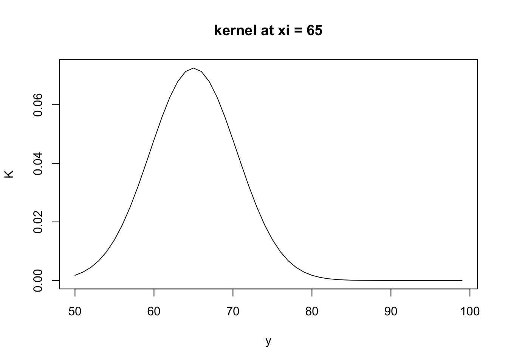
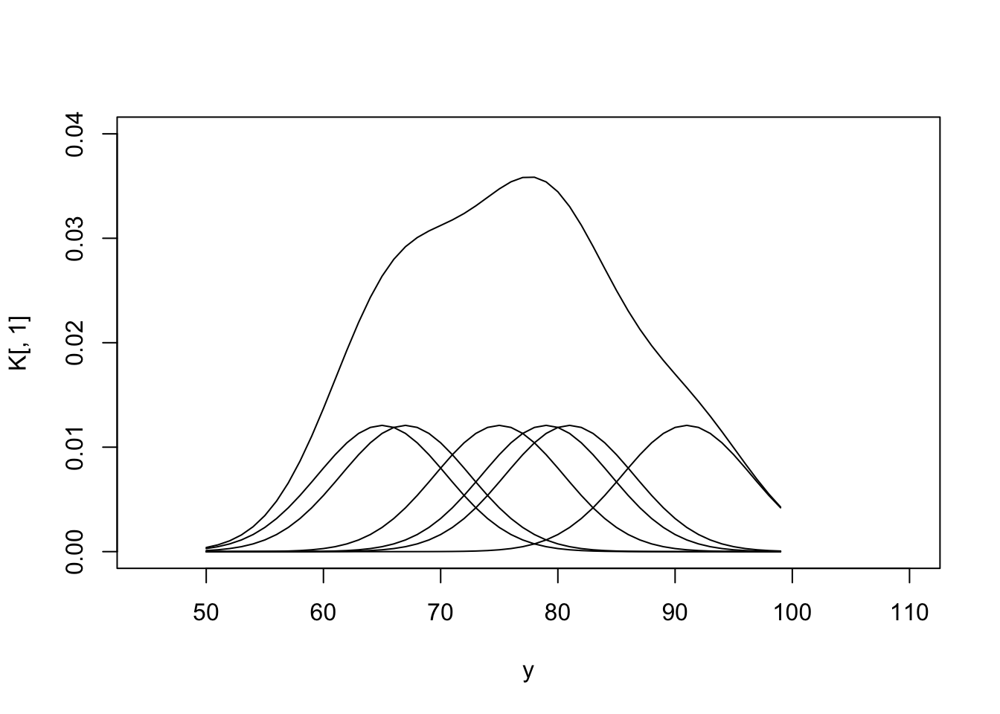
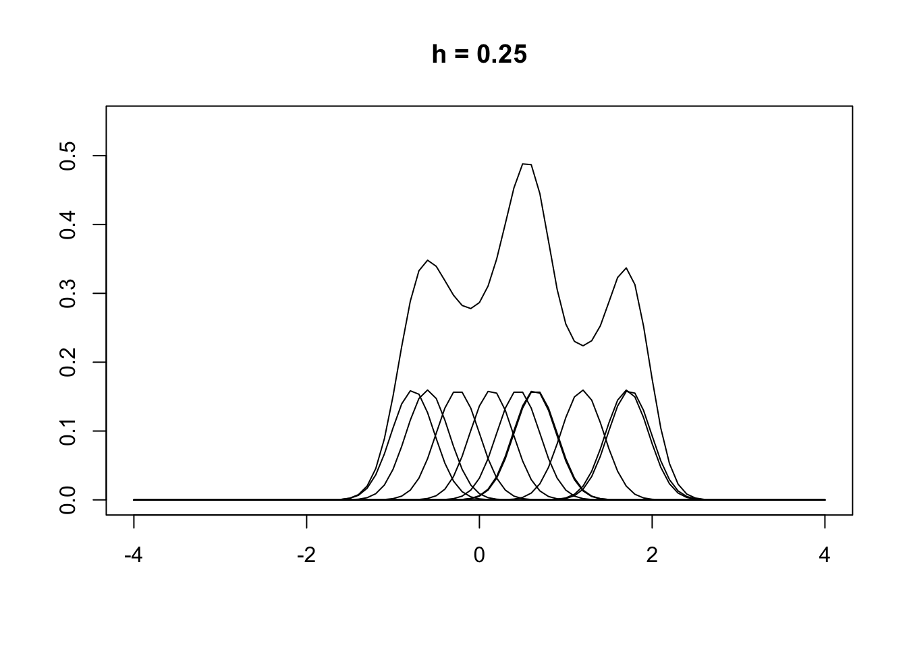
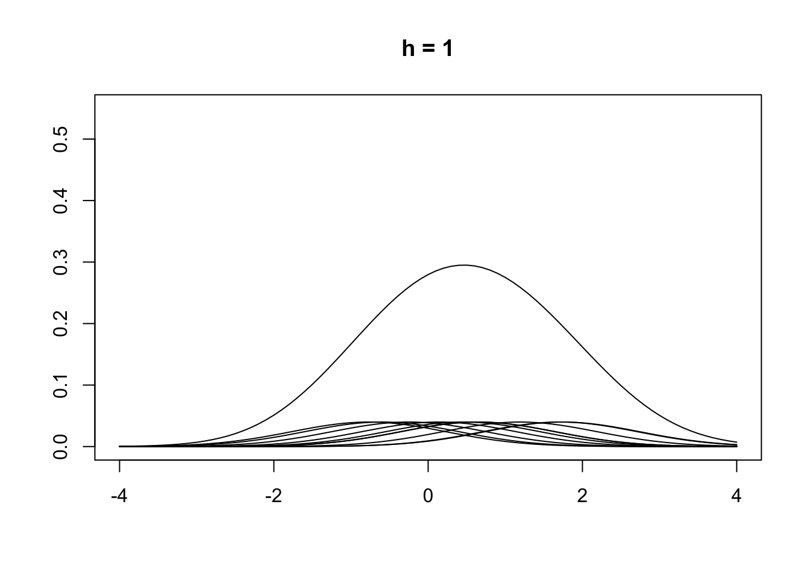
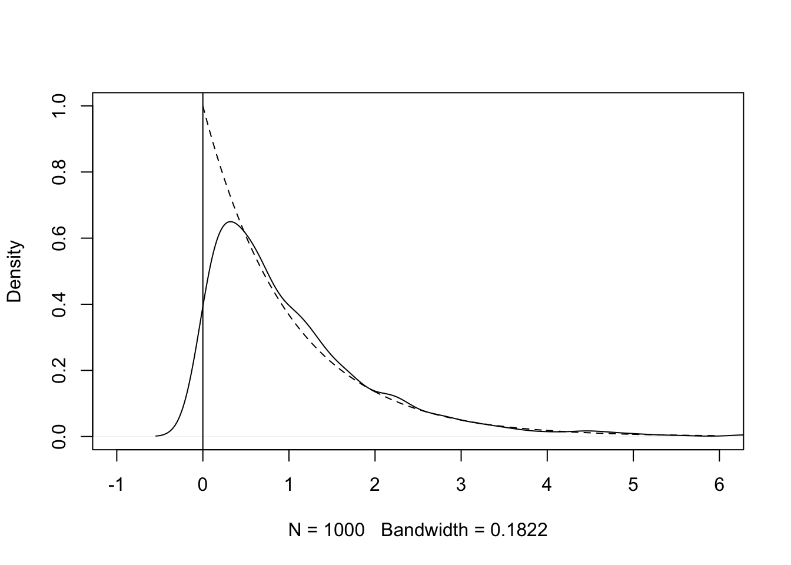
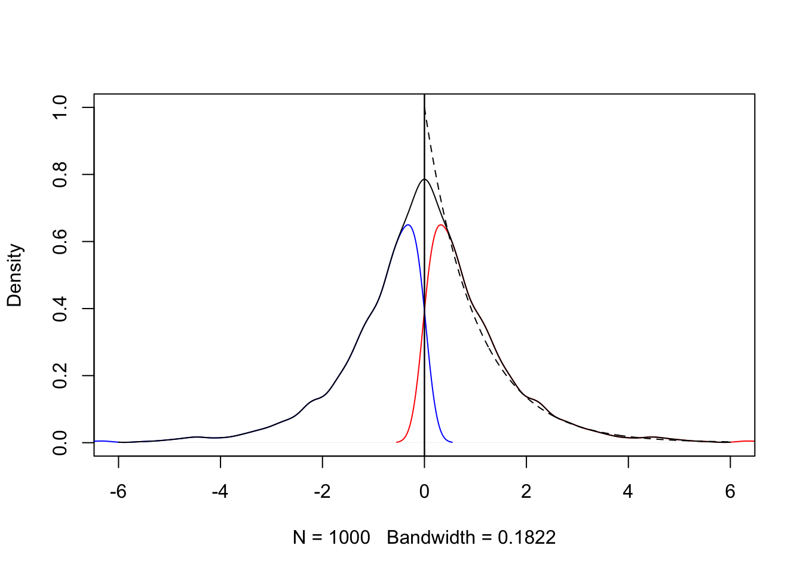

x <- c(65, 75, 67, 79, 81, 91) # observed data
y <- 50:99
h <- 5.5
n <- length(y)
B <- numeric(n)
K <- numeric(n)Probability density function
확률밀도함수(pdf)는 확률변수의 분포를 나타내는 함수로 보통 확률변수가 연속형일 때를 지칭한다. 확률 밀도 함수는 두 가지 조건을 만족해야 한다.
모든 실수값 x에 대해 \(f(x)\ge 0\)
\(\int_{-\infty}^{\infty} f(x) dx\)=1
pdf 조건에서 알 수 있듯이 확률밀도함수는 확률이 아니며, 확률밀도함수를 적분해야만 확률이 나온다.
Probability density
확률 밀도는 \(X=x_0\)일 때 확률밀도함수(\(f(x_0)\))값을 의미한다. 따라서 확률밀도함수는 분포의 형태를 어떻게 정의하는지에 따라 얼마든지 1 이상의 값이 나올 수 있다. 예를 들어 정규분포의 확률밀도함수 식에 특정 값을 대입했을 때 나오는 값(y축 값)을 생각해보면 얼마든지 1 이상의 값이 나올 수 있다.
연속형 확률 변수 \(X\)를 정의했을 때 \(P(X=x_0)\)은 연속 구간에서는 취할 수 있는 무수히 많은 경우의 수가 있으므로 \(P(X=x_0)=0\)이다.
만약 \(X\)의 범위가 a와 b 사이에서 정의되면 확률밀도함수의 정의에 따라서 \(P(a\le X \le b)\) = 1을 만족해야 한다. 이 때 두 가지 모순이 존재한다. \(P(X=x_0)=0\)으로 정의하면 \(X\)의 범위 a와 b 사이에서 \(P(X=x_0)\)무수히 많이 더해도 1을 만족하지 않는다. \(P(X=x_0)=\epsilon\), 즉 0에 아주 근접한 매우 작은 값으로 정의하면 연속 구간에서는 취할 수 있는 무수히 많은 경우의 수가 있으므로 \(P(a\le X \le b)=\infty\)가 된다.
따라서 \(P(X=x_0)\)은 위의 정의를 그대로 생각해보면 0은 아니지만 0보다 작은 값도 아닌 값?이 된다.
다시 처음 확률밀도함수의 정의에서 출발하면 확률 변수 \(X\)의 범위가 0부터 1까지라고 했을 때 \(P(0\le X \le 1)\) = 1이다. 구간을 절반으로 나누면 \(P(0\le X \le \frac{1}{2})=\frac{1}{2}\)이다. 구간을 다시 절반으로 나누면 \(P(0\le X \le \frac{1}{4})=\frac{1}{4}\)이다. 이러한 과정을 계속 반복해서 구간을 잘게 쪼개면 \(P(0\le X \le d)=d\)가 성립하며, \(P(x_0\le X \le x_0+d)=d\)이다. 즉, \(P(X=x_0)=\lim_{d\to+0} P(x_0 \le X \le x_0+d)\)이며, 식에 따라 \(P(X=x_0)=0\)이 된다.
이 정의도 문제가 있는데 정의 그대로 \(P(X=x_0)=0\)이면 a의 값에 상관없이 \(P(0 \le X \le a)=0\)이 된다. 이 문제를 해결하기 위해서 \(P(x_0\le X \le x_0+d)=d\)d에서 양변에 d를 나눠서 확률밀도를 재정의하면 다음과 같다.
\[ \begin{align} f(x_0) &= P(X=x_0) \newline &=\lim_{d\to+0} \frac{P(x_0 \le X \le x_0+d)}{d} \newline &= \lim_{d\to+0} \frac{P(x_0 \le X \le x_0+d)}{d} \newline &=lim_{d\to+0}\frac{d}{d} \newline &=lim_{d\to+0} 1 = 1 \end{align} \]
Density estimation 의미
통계학에서 density estimation은 보통 분포(확률밀도함수)의 형태를 가정하고 데이터를 이용해서 모수를 추정하는 방식이다.(parametric density estimation이라고도 한다)
반면에 kernel density estimation에서는 분포의 형태를 가정하지 않고 관찰된 데이터만을 이용해서 분포를 추정한다. (non-parametric density estimation이라고도 한다)
Kernel density 정의
\(\hat{f(x)} = \frac{1}{n}\sum_{i=1}^n w(\frac{x-X_i}{h})\)
\(h\) : bin width or smoothing parameter or window width
간격을 좁게 하면 undersmooth되고, 반면에 간격을 넓게 하면 oversmooth된다.
\(w\) : weight function (=\(K(\cdot)\) : kernel function) \(w(t)\)는 probability density의 성질을 만족해야 하며, density의 형태를 원점에서 대칭으로 정의한다.
kernel function 종류

kernel의 형태는 정의하기에 따라 여러 종류가 있다. kernel 함수의 형태에 따라 추정되는 밀도의 형태가 조금씩 바뀐다. 다만 전반적인 추정된 밀도의 형태는 거의 유사하다(MISE를 기준으로 kernel별 점근적 상대 효율성을 비교해보면 Epanechnikov kernel이 1로 가장 좋지만 다른 kernel function과 큰 차이를 보이지 않는다).
kernel function을 정하는 것 보다는 bin width를 정하는 것이 더 중요하다. rectangular kernel일 경우 histogram density estimation과 같다.
Gaussian kernel example
\(x_i\) = 65일 때
for (j in 1:n) {
A <- 1/(h*sqrt(2*pi))
B[j] <- (-0.5)*((y[j] - 65)/h)^2
K[j] <- A*exp(B[j])
}
plot(y, K, type = 'l', main = 'kernel at xi = 65')
각 \(x_i\) 별 kernel plot
m <- length(x)
B <- matrix(0, nrow = n, ncol = m)
K <- matrix(0, nrow = n, ncol = m)
for (i in 1:m) {
for (j in 1:n) {
A <- 1/(h*sqrt(2*pi)*m)
B[j, i] <- (-0.5)*((y[j] - x[i])/h)^2
K[j, i] <- A*exp(B[j, i])
}
}
plot(y, K[,1], type = 'l', main = '', xlim = c(45, 110), ylim = c(0, 0.04))
for (i in 2:6) {
lines(y, K[,i], type = 'l', main = '')
}
# 최종 kernel
K <- round(K, digit = 7)
d <- rowSums(K)
lines(y, d, type = 'l', main = 'Kernel density')
\(h\) 값에 따른 kernel의 형태 변화 (Gaussian kernel 일 때)
\(h\) 값을 작게 하면 undersmooth되고, 반면에 h값을 크게 하면 oversmooth된다. 따라서 적절한 \(h\)를 찾는 것이 중요하다. \(h\) 값은 MLCV(Maximum likelihood cross validation)에 의해 추정할 수 있다. \(MLCV_{max} = \frac{1}{n}\sum_{i=1}^nlog[\sum_{j}w(\frac{x_j-X_i}{h})]-log[(n-1)h]\)
x <- c(-0.77, -0.6, -0.25, 0.14, 0.45, 0.64, 0.65, 1.19, 1.71, 1.74)
y <- seq(-4, 4, 0.1)
n <- NROW(x)
m <- NROW(y)
B <- matrix(0, nrow = m, ncol = n)
K <- matrix(0, nrow = m, ncol = n)
h <- 0.25
for (i in 1:n) {
for (j in 1:m) {
A <- 1/(h*sqrt(2*pi)*n)
B[j, i] <- (-1/2)*((y[j] - x[i])/h)^2
K[j, i] <- A*exp(B[j, i])
}
}
plot(y, K[,1], type = 'l', main = 'h = 0.25', ylim = c(0, 0.55), ylab = '', xlab = '')
for (i in 2:10) {
lines(y, K[,i], type = 'l', main = '')
}
K <- round(K, digit = 7)
d <- rowSums(K)
lines(y, d, type = 'l', main = '')
x <- c(-0.77, -0.6, -0.25, 0.14, 0.45, 0.64, 0.65, 1.19, 1.71, 1.74)
y <- seq(-4, 4, 0.1)
n <- NROW(x)
m <- NROW(y)
B <- matrix(0, nrow = m, ncol = n)
K <- matrix(0, nrow = m, ncol = n)
h <- 1
for (i in 1:n) {
for (j in 1:m) {
A <- 1/(h*sqrt(2*pi)*n)
B[j, i] <- (-1/2)*((y[j] - x[i])/h)^2
K[j, i] <- A*exp(B[j, i])
}
}
plot(y, K[,1], type = 'l', main = 'h = 1', ylim = c(0, 0.55), ylab = '', xlab = '')
for (i in 2:10) {
lines(y, K[,i], type = 'l', main = '')
}
K <- round(K, digit = 7)
d <- rowSums(K)
lines(y, d, type = 'l', main = '')
Boundary kernel
원점에서 불연속점이 존재하거나 \(x\)의 범위가 원점에서 시작하거나 끝나는 경우(boundary of the support set of a density) 즉, boundary 주변에서 KDE는 large error를 갖는다. 이에 대한 해결책으로 reflection boundary technique을 고려해볼 수 있다.
set.seed(1)
x <- rexp(1000, 1)
plot(density(x), xlim = c(-1, 6), ylim = c(0, 1), main = '')
abline(v = 0)
y <- seq(0.001, 6, 0.01)
lines(y, dexp(y, 1), lty = 2)
Reflection boundary technique
전체 데이터 \(x_1, ..., x_n\)에 대해서 원점에서 대칭인 \(-x_1, ..., -x_n\)을 만든다. \(2n\)개의 데이터를 이용해서 \(g\)를 추정한다. \(\hat{f(x)}=2\hat{g(x)}\)
즉, 대칭인 2개의 데이터셋에 대해서 각각 KDE를 구한다. 두 개의 KDE를 합한 KDE를 구하고 원 데이터 범위의 KDE만 남긴다.
set.seed(1)
x <- rexp(1000, 1)
z=-x
plot(density(x), xlim = c(-6, 6), ylim = c(0, 1), main = '', col = 'red')
abline(v = 0)
y <- seq(0.001, 6, 0.01)
lines(density(z), xlim = c(-6, 6), ylim = c(0, 1), main = '', col = 'blue')
xx <- c(x, -x)
g <- density(xx, bw = bw.nrd0(x))
a <- seq(-6, 6, 0.01)
ghat <- approx(g$x, g$y, xout = a) # 지정된 수의 근사 함수 값을 반환
fhat <- 2*ghat$y
bw <- paste('Bandwidth = ', round(g$bw, 5))
lines(a, fhat, type = 'l', xlim = c(-6, 6), ylim = c(0, 1), main = '', xlab = bw, ylab = 'density')
abline(v=0)
y <- seq(0.001, 6, 0.01)
lines(y, dexp(y, 1), lty = 2)
참고 2 : statistical computing with R second edition